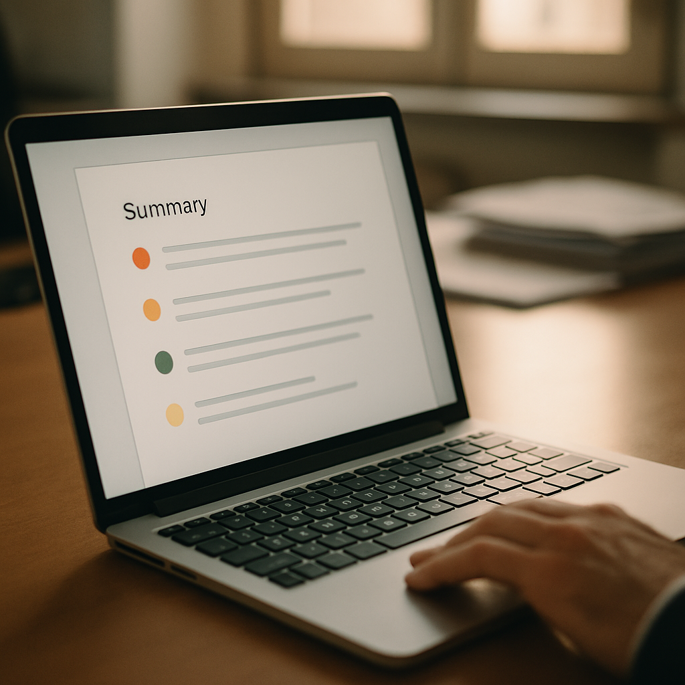

Blog · AI legale & contratti
Uno studio legale con 8 professionisti può consumare 40-60 ore al mese solo per leggere contratti standard e cercare le quattro clausole che contano davvero. Il problema non è la complessità dei documenti: è che il 70-80% del testo è boilerplate identico al contratto precedente. Qui spieghiamo perché questo accade, dove si fermano le soluzioni tradizionali e quale categoria di strumento risolve il problema alla radice.
Un avvocato interno o uno studio legale con 5-15 dipendenti riceve in media 3-8 contratti da revisionare ogni settimana. NDA tra aziende, contratti con fornitori SaaS, accordi di distribuzione, lettere di incarico. Ognuno richiede 60-90 minuti di lettura attenta. Non perché il contenuto sia sempre complesso, ma perché il professionista deve scorrere decine di pagine per trovare quattro o cinque clausole che potrebbero creare problemi: la limitazione di responsabilità, il foro competente, la durata automatica del rinnovo, le clausole di esclusiva.
Il paradosso è che il 70-80% di quei contratti è testo standard. Boilerplate copiato da un template, formule di rito, rimandi normativi identici a quelli del contratto precedente. L'attenzione professionale viene sprecata a leggere ciò che è già noto, invece di concentrarsi sulle tre righe che contano davvero. Uno studio con 4 avvocati può consumare 10-15 ore a settimana solo in questa attività.
Il costo è duplice. Un avvocato che passa il pomeriggio a revisionare NDA ordinari è un avvocato che non prepara la strategia per il cliente complesso, non sviluppa nuovi clienti, non forma i collaboratori più giovani. Ogni ora di lettura meccanica è un'ora sottratta al lavoro che solo un professionista esperto sa fare. Nel medio termine, questa dispersione limita la capacità di crescita dello studio o dell'ufficio legale e riduce la marginalità economica della pratica.
La risposta più comune al problema è organizzativa: si creano checklist di revisione, template di riferimento in Word o SharePoint, procedure interne che indicano cosa controllare. Ogni nuovo collaboratore riceve la lista delle clausole critiche da verificare. È meglio di niente. Funziona abbastanza bene quando il volume è basso e i contratti sono sempre dello stesso tipo.
Il problema si presenta quando il volume cresce, quando il contratto arriva in inglese o in un formato non standard, quando la controparte ha riscritto la clausola di responsabilità in modo sottile ma significativo. La checklist manuale non "legge" il contratto: sei ancora tu che devi scorrere tutto il documento per capire se quella clausola è presente, come è formulata, se si discosta dal template. Il passaggio da 90 minuti a 60 minuti è il massimo che ottieni con l'organizzazione tradizionale.
Circa il 60-65% dei casi di revisione contrattuale in studi sotto i 20 avvocati conferma che le soluzioni basate su template e checklist manuali non riducono significativamente il tempo di lettura del singolo documento. Riducono gli errori di omissione, ma non la fatica operativa. L'AI Legale & Contratti interviene esattamente su questo punto cieco: automatizza la ricerca e la segnalazione delle clausole critiche, lasciando all'avvocato solo il giudizio su cosa contrattare.
La categoria di soluzione si chiama agente AI per la revisione documentale legale. Non è un motore di ricerca sul contratto, non è un chatbot a cui fai domande una alla volta. È un sistema che riceve il documento, lo elabora in autonomia rispetto a un quadro di riferimento definito, e restituisce un output strutturato: clausole non standard evidenziate, scostamenti dal template aziendale, sintesi executive di una pagina anche su contratti di 60-80 pagine. Su accordi che trattano dati personali, genera automaticamente una checklist GDPR da verificare prima della firma.
Tre componenti rendono questo approccio diverso da un semplice upload su un chatbot generico. Il primo è un sistema di confronto tra il documento ricevuto e i template di riferimento dello studio o dell'ufficio legale. Il secondo è una logica di classificazione delle clausole per tipo di rischio, che separa ciò che è standard da ciò che merita attenzione. Il terzo è la capacità di generare output diversi per destinatari diversi: una sintesi per il cliente, un'analisi tecnica per l'avvocato responsabile, una checklist per l'HR o l'ufficio acquisti.
Non è una configurazione che si fa in un pomeriggio su uno strumento off-the-shelf. Richiede di mappare i template dello studio, definire le soglie di rischio per ogni tipo di clausola, costruire la logica di output in base ai destinatari interni. Chi non ha esperienza specifica in questo tipo di sistemi produce qualcosa che funziona in demo e si inceppa sulla prima variante contrattuale reale. La firma e la responsabilità della revisione restano sempre dell'avvocato. L'agente prepara il terreno, velocizzando il lavoro di selezione e analisi.
Uno studio con 8 tra avvocati e praticanti gestisce mediamente 40 contratti al mese tra NDA, contratti di fornitura IT e accordi commerciali. Prima dell'intervento, la revisione di ogni documento richiedeva tra 60 e 90 minuti al professionista assegnato. Su base mensile: tra 40 e 60 ore di lavoro dedicate esclusivamente a lettura e annotazione. Il 30% di questi contratti conteneva almeno una clausola non standard che richiedeva una controproposta scritta. Gli altri erano revisioni di routine che arrivavano comunque all'avvocato senior per validazione finale.
Con il sistema di AI Legale & Contratti attivo, la revisione preliminare di un NDA standard scende a 4 minuti. L'agente segnala le clausole critiche, indica gli scostamenti dal template dello studio e produce la sintesi di una pagina che l'avvocato legge prima di aprire il documento originale. Il tempo dell'avvocato si concentra solo sulle clausole già identificate come non standard. Le ore mensili dedicate alla fase meccanica di lettura si sono ridotte del 70-75%, liberando 30-40 ore da destinare ad attività a maggiore valore per lo studio.
Non ogni studio ottiene questi risultati. La riduzione massima si realizza quando i contratti sono ricorrenti per tipologia e lo studio ha template di riferimento ben definiti. Se il volume è sotto i 10 contratti al mese o se ogni accordo è profondamente diverso dagli altri, il guadagno è più contenuto. La soglia sotto cui l'investimento non si ripaga nel primo anno è circa 15-20 revisioni contrattuali al mese. Sopra quella soglia, il calcolo economico è quasi sempre favorevole entro 6-9 mesi dall'attivazione.

| Hai questo | Conviene |
|---|---|
| Meno di 10 contratti al mese, tutti molto diversi tra loro | Non vale la configurazione custom: gestisci con checklist e revisione manuale |
| 10-20 contratti al mese, tipologie ricorrenti ma nessun template formalizzato | Prima formalizza i template, poi valuta un tool off-the-shelf di legal AI |
| Oltre 20 contratti al mese, template definiti, più professionisti coinvolti nella revisione | Agente AI su misura ha ROI misurabile entro 6-9 mesi dall'attivazione |
| Volume già alto e un senior che dedica 2+ ore al giorno a revisioni di routine | Intervieni subito: ogni mese di attesa è costo diretto e rischio di errori per stanchezza |
Sì, può farlo, ed è fondamentale saperlo prima di usarlo. Un agente AI per la revisione contrattuale non è infallibile: può non riconoscere una clausola formulata in modo atipico, può classificare come standard qualcosa che non lo è, può perdere un rimando incrociato tra articoli distanti nel documento. Per questo il sistema è progettato come strumento di pre-analisi, non di firma. L'avvocato riceve un output già elaborato, lo verifica sulle parti segnalate come critiche e mantiene la responsabilità professionale della revisione finale. Chi usa l'agente aspettandosi un'automazione completa del giudizio legale sta usando lo strumento nel modo sbagliato. Chi lo usa per ridurre il tempo di lettura meccanica, passando da 90 minuti a 15-20 minuti di controllo focalizzato, ottiene risultati concreti senza trasferire responsabilità alla macchina.
I modelli linguistici su cui si basano questi agenti gestiscono bene l'inglese giuridico, spesso meglio di quanto ci si aspetti. Contratti SaaS internazionali, NDA in inglese con controparte straniera, accordi di distribuzione in inglese: il sistema li elabora senza problemi di comprensione del testo. La complessità aumenta con lingue meno diffuse o con varianti giuridiche molto specifiche di un ordinamento straniero, dove il confronto con il template italiano perde parte del valore. Per studi che lavorano prevalentemente in italiano con occasionali contratti in inglese, la copertura è sostanzialmente completa. Per chi lavora su diritto internazionale in modo strutturato, è opportuno discussione dei casi d'uso specifici prima della configurazione, in modo da mappare correttamente quali lingue e ordinamenti vengono gestiti dal sistema.
È la domanda giusta da fare, soprattutto per uno studio legale dove la riservatezza dei documenti è un obbligo deontologico. La risposta dipende dall'architettura scelta in fase di configurazione. Esistono soluzioni in cui i documenti vengono elaborati attraverso API di provider cloud con garanzie contrattuali specifiche sulla non memorizzazione dei dati (es. data processing agreement con clausole di non training), e soluzioni in cui il processing avviene in ambienti privati o on-premise. La scelta dell'architettura giusta è parte integrante del lavoro di implementazione. Uno studio legale non dovrebbe mai accettare una configurazione in cui i contratti dei clienti transitano su sistemi senza garanzie contrattuali esplicite sulla riservatezza e senza clausole che vietano qualsiasi uso secondario dei dati.
Prossimo passo
Apri K-BOT e in 5 minuti ti diciamo se questa categoria di soluzione fa al caso della tua PMI, oppure se basta uno strumento off-the-shelf. Gratuito.
L'offerta K2-AI sulla categoria: cosa fa, come si integra, tempi e modalità.
Descrivi il tuo caso. K-BOT dice se vale custom o se basta uno strumento standard.
Se preferisci una call diretta, scrivici. Rispondiamo in 24 ore con una lettura onesta.